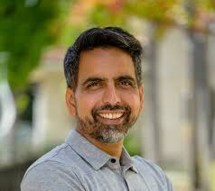
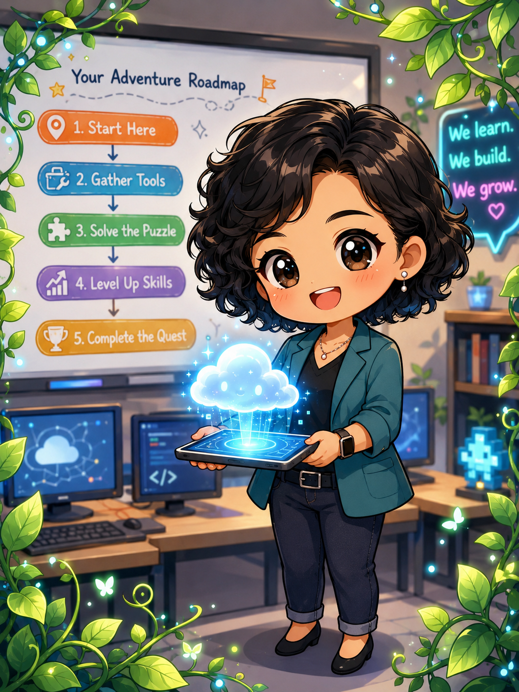

Reflection Question
1. If your teaching style was a movie genre(e.g., Adventure, Sci-Fi, Mystery), which one would it be and why?
My style is definitely an Adventure. As a "Challenge Seeker," I see every computer lab session as a quest where the students are the explorers and I am their guide. I love setting up the digital terrain, and nothing beats the feeling of watching their minds bloom when they successfully navigate a difficult concept or finish a project they once thought was impossible. It’s all about making the journey toward digital mastery exciting and rewarding.
2. What is one "old" teaching habit you are ready to trade in for a "new" innovative one?
I’m ready to trade in the old habit of relying on physical review sheets and local file saving. These are too easy to lose or forget, which can cause unnecessary stress for students. Instead, I’m leaning into my "Master Cloud" superpower. My goal is to give students a digital "external brain"—a secure space where they have 24/7 access to their work and materials. This ensures they can review with confidence and ease from anywhere, at any time.
I’m moving away from the old habit of lecture-heavy instruction, which can often lead to frustration when technical roadblocks appear. My new approach is providing pre-designed activities and structured, step-by-step tutorials. I want to recreate a feeling of "ease" in the classroom; by giving students a clear digital roadmap, they can explore complex computer skills at their own pace, making the technology feel like an exciting challenge rather than a burden.
Learning Activity
Teacher-To-Teacher Interviews
What is your secret teaching superpower?
Jerald Mejia Ilustrisimo, LPT
Teaches: SHS - Entrep, PE, Programming, .NET
"My secret teaching superpower is patience and creativity. I make lessons fun and easy to understand, and I never give up on helping my students learn and believe in themselves."
Shantal Santiago, LPT
Teaches: JHS - ICT, IA
"My secret teaching superpower is giving a personal experience of learning. No one learns better than the self."
Online Research
Find Your Mentor
Rather than a single person, my teaching identity is shaped by a trio of innovators whose combined philosophies perfectly match the educator I am becoming.

Maria Montessori
The Environment
Montessori pioneered the "prepared environment"—a space where students learn independently. In my lab, my structured tutorials and digital roadmaps are my version of this. I don't rely on traditional lectures; I prepare the digital terrain so students can explore at their own pace.
Sal Khan
The Master Cloud
The founder of Khan Academy built his platform on giving students 24/7 access to step-by-step guides. This directly aligns with my "Master Cloud" superpower, where I provide a digital "external brain" that recreates a feeling of ease and prevents the frustration of falling behind.
Mitchel Resnick
The Challenge Seeker
As the creator of Scratch, Resnick designs tech experiences that are easy to start but offer endless challenges. This matches my "Challenge Seeker" identity. Like him, I believe technology should be an exciting adventure rather than an overwhelming task.
The Combined Journey
From their combined journeys, I learn that structure and freedom actually work hand-in-hand. Montessori teaches me how to prepare the learning space, Khan teaches me how to make that space permanently accessible through the cloud, and Resnick teaches me how to fill it with engaging challenges. Their global success validates my core belief: when a teacher carefully organizes the digital roadmap and then steps back to let the students lead, their problem-solving skills and digital mastery will naturally bloom.
The Output

Licensed ICT Educator
Reycel Carodan Sasil, LPT
Digital Learning Facilitator & Challenge Seeker
Reycel Carodan Sasil is a Licensed Professional Teacher and a dedicated "Challenge Seeker." Managing the digital journey for early computer learners, she specializes in transforming complex tech concepts into manageable, exciting adventures.
Inspired by the "prepared environments" of Maria Montessori and the accessible technology of modern innovators, Reycel empowers her students with the "Master Cloud" superpower—giving them a digital external brain with 24/7 access to their work and study materials. By designing highly structured, step-by-step tutorials, she replaces classroom frustration with a feeling of "ease."
Reycel believes that technology and young minds are a perfect match, and she is passionate about laying a secure, organized digital roadmap for the next generation of confident creators.